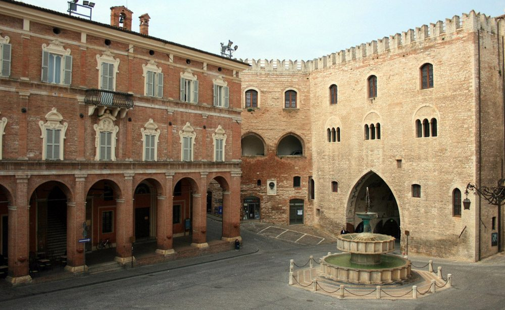
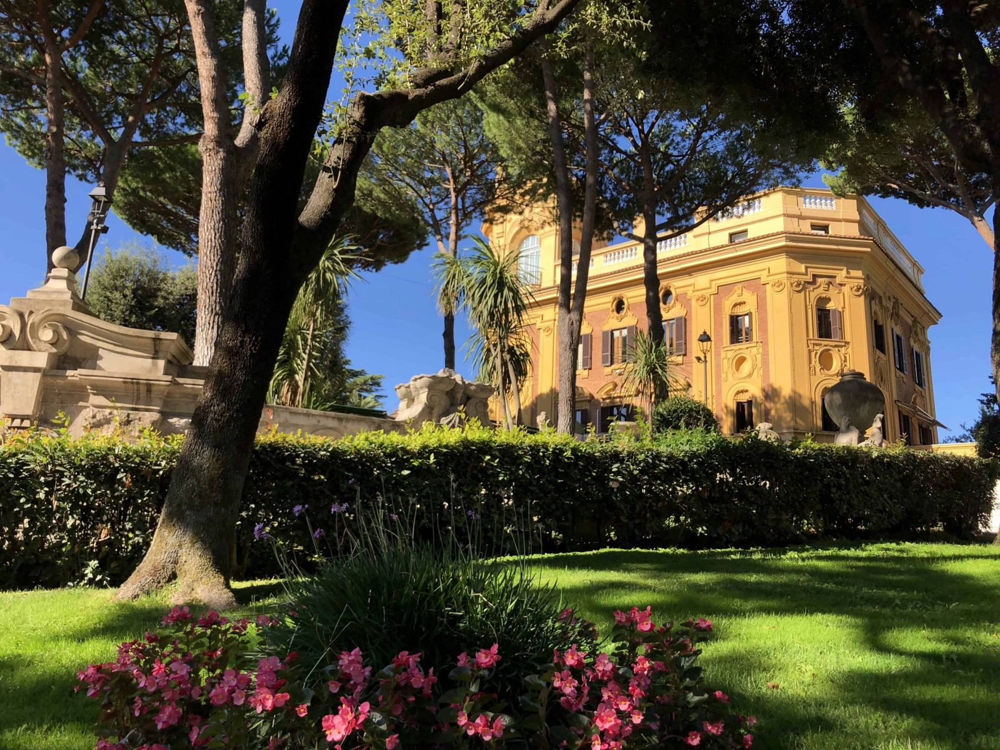

Currently based in Paris, on exchange at EM Normandie while completing my MSc in Management at LUISS. Finance, consumer tech and fashion are the sectors I enjoy most: I like understanding how companies create value and how technology changes the way they work.
Having studied in Italy, Spain and France, I bring an international perspective, a data-driven mindset and an entrepreneurial attitude.
Four cities, and counting.
Taking part in Stock Market Learning (Planspiel Börse), a European stock market simulation game, during high school helped build my interest in economics and finance.

Moving from a small town to a big city made me grow up fast, both personally and professionally.
Living abroad for the first time gave me perspectives I had never considered before.
I turned down offers from other master’s programmes, but in the end you always go back to where you felt at home.

My second experience abroad, to strengthen my international perspective.